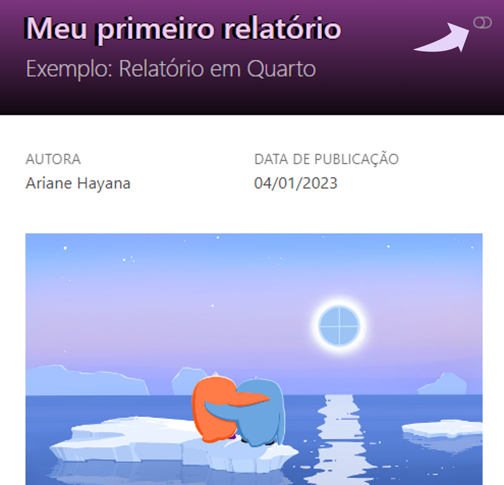
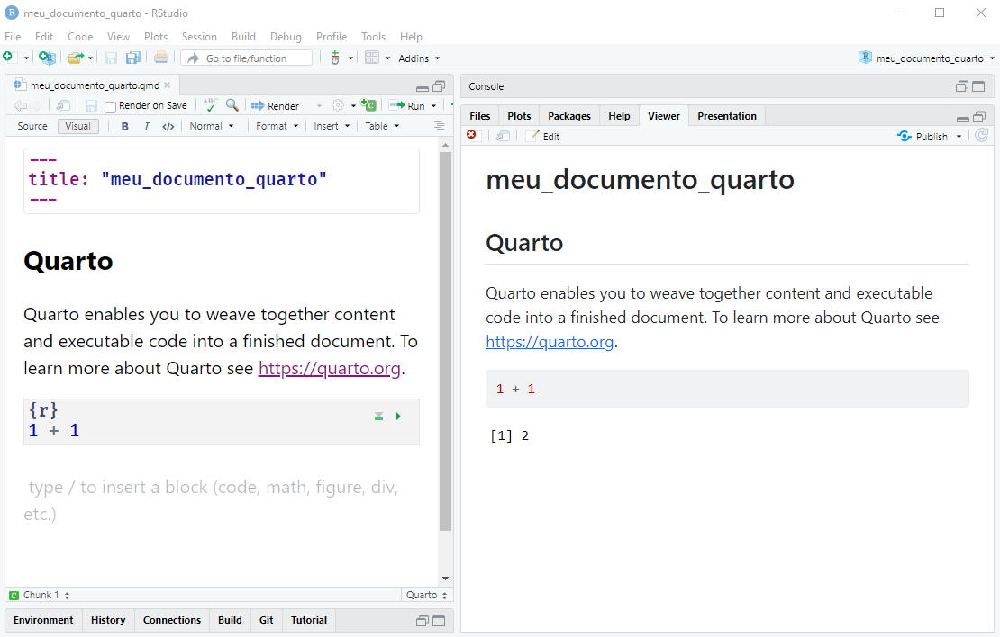
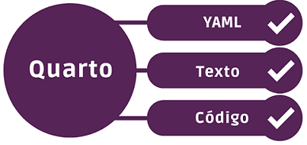
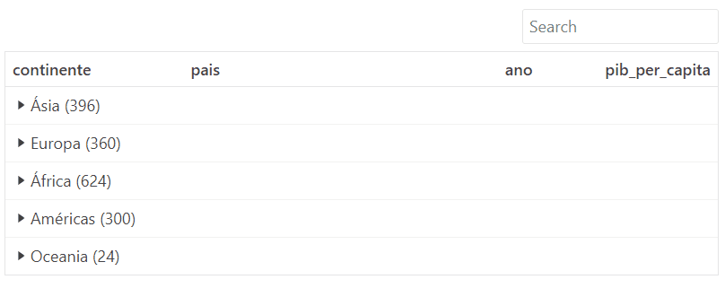
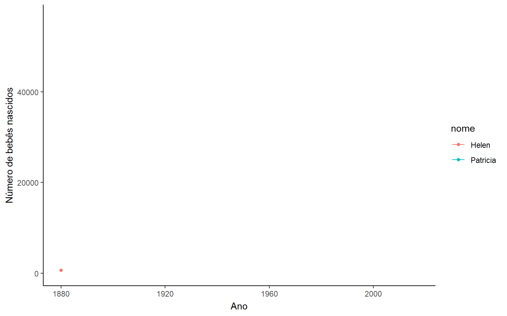

{kind=link}

Autoria

Este post foi escrito pela Ariane Hayana, uma integrante da comunidade R-Ladies São Paulo! Criadora da página @ _estatistica, é graduada em Economia e finalista em sua segunda graduação no curso de Bacharelado em Estatística na Universidade Federal do Amazonas (UFAM), atuando como estagiária no Supremo Tribunal Federal (STF).
Saiba mais sobre ela em seu LinkedIn.
E aí, vamos falar de Quarto?

Hello, world!
Você que gosta da nossa querida linguagem R provavelmente já deve ter ouvido falar sobre Quarto. Por definição, segundo Quarto.org,
“Quarto é uma versão multilíngue da próxima geração do R Markdown (do RStudio) e inclui dezenas de novos recursos, ao mesmo tempo em que é capaz de renderizar a maioria dos arquivos
.Rmdexistentes sem modificação.”
Existem diversas possibilidades de criação com Quarto, especialmente pelo fato de que ele é independente de R, portanto, é possível criar diferentes conteúdos dinâmicos com Python, R, Julia e Observable, por exemplo.
A base para edição em textos é a linguagem de marcação Markdown e ao trabalharmos com códigos, os chunks continuam sendo o nosso melhor amigo. Quanto às publicações, temos a possibilidade de criar relatórios em diversos formatos (HTML, PDF, por exemplo), apresentações, sites, blogs, livros e outros.
Assim, hoje apresento a vocês um mini tutorial de como criar o nosso primeiro relatório em HTML com Quarto no RStudio. Para tanto, como o Quarto é independente de R, você precisa configurar o ambiente para explorar da melhor forma possível as infinitas possibilidades que o Quarto oferece.
Aqui vão alguns pontos são importantes:
Pré-requisitos
Baixar e instalar a versão mais recente do Quarto;
Baixar e instalar a versão mais recente do R. Caso já tenha, verifique se o seu R está atualizado para R 4.1 ou R 4.2;
Baixar e instalar a versão mais recente do RStudio.
Para mais detalhes, clique aqui.
Outra opção bem bacana é utilizar o Posit Cloud, que permite você explorar as ferramentas do RStudio na nuvem de maneira simples e sem grandes dificuldades para configurar. Caso você nunca tenha explorado o Posit Cloud, acesse o link aqui e crie uma conta através dos seguintes passos:
Para saber sobre como criar um projeto no Posit Cloud, acesse a demonstração aqui.
O primeiro passo
Agora, considerando que você já está com o ambiente preparado, vamos colocar a mão na massa!
Supondo que você está começando do zero no Quarto, o primeiro passo é criar o documento (.qmd) no RStudio. Sugiro fortemente que você crie um projeto antes de tudo. São apenas seis passos simples:

Voilà! Temos o nosso projeto e primeiro documento criados. Este é o modelo básico para publicação em Quarto e o formato de saída será, por padrão, em HTML. Para verificarmos o resultado final precisamos renderizar o nosso arquivo .qmd. Para isso, clique em Render ou utilize o atalho do teclado CTRL + SHIFT + K.

E temos como resultado final:

Perceba que na tela acima eu estou trabalhando com o Visual selecionado (botão localizado na barra de ferramentas), o que permite a visualização das alterações em tempo real e é uma ótima opção para quem ainda não está tão familiarizado(a) com Markdown. Vale a pena conferir as diversas possibilidades de utilização do Visual Editor em um post da Posit intitulado Exploring RStudio’s Visual Markdown Editor, cuja autoria é de Isabella Velásquez.
Caso você prefira, ao clicar em Source (botão à esquerda do Visual na barra de ferramentas), é possível escrever seu documento no modo de origem ou mesmo ir alternando entre o Source e Visual.
E aí, o que achou? Chegamos até aqui e você deu os seus primeiros passos com Quarto (uhuul!! 😍)! Agora se liga nessas dicas:
Dicas
Seja curioso(a): aqui eu apresentei uma das diversas formas para criar documentos, projetos, usar o RStudio na nuvem, etc, entretanto, existem outras possibilidades que você pode aprender explorando a documentação;
Se você já trabalha com R Markdown, possivelmente vai achar muitas semelhanças nas aplicações com o Quarto. Assim, sugiro também explorar a documentação;
Por fim, uma dica final: explore a documentação 😂😂 e acompanhe as novidades em Quarto.org.
Subindo um degrau
Agora que você já sabe criar um documento com Quarto, vamos explorar algumas ferramentas para incrementar as nossas criações.
Criei um modelo de relatório .qmd cuja saída é em HTML e está disponível aqui. Assim, vamos desvendar cada etapa de criação juntos.
Primeiramente, é importante compreender a estrutura de um documento em Quarto. Veja a representação básica apresentada abaixo:

Essas três partes são:
YAML (Yet Another Markup Language): cabeçalho onde são inseridas as configurações do documento (formatação, data, título, autor, entre outros). É sempre inserido no início do documento e delimitado por
---;Texto: usa markdown como sua sintaxe de documento principal;
Códigos: versão multilíngue, portanto, nos chunks (blocos de códigos) podemos inserir códigos em R, Python, Julia e outros.
Assim, no exemplo que vamos explorar, veja que temos alguns elementos interessantes que foram inseridos.
Note que no canto superior direito é possível identificar uma chave, em que o(a) leitor(a) pode selecionar o tema desejado, conforme a figura a seguir:
Observe na figura acima que o documento possui um título, subtítulo, nome da autora e a data de publicação. Tais informações são configuradas no YAML, onde também foram definidas outras configurações do documento, conforme o código a seguir:
YAML
---
title: "Meu primeiro relatório" # -----> Título
subtitle: "Exemplo: Relatório em Quarto" # -----> Subtítulo
author: "Ariane Hayana" # -----> Autoria
date: "2023-02-08" # -----> Data de publicação
date-format: short # -----> Formato de data curto: dd/mm/aaaa
lang: pt # -----> Linguagem: português
format:
html:
code-fold: true # -----> code-fold: `true` para "ocultar" o bloco de códigos
theme:
light: [pulse,custom.scss] # Tema modo claro
dark: [cyborg,custom.scss] # Tema modo escuro
title-block-banner: true # -----> Estilo de banner no topo do documento
bibliography: references.bib # -----> Referências do documento
---Deixei alguns comentários sobre as configurações no código, mas alguns pontos cabem atenção especial:
date-format: neste exemplo, apresentei o formato curto de data, entretanto, existem diversos formatos possíveis que podem ser consultados em Quarto.org;lang: esta opção é usada para identificar o idioma principal do documento. Outras idiomas podem ser considerados, como o espanhol (lang: es) e francês (lang: fr), por exemplo;code-fold: quando esta opção é igual atrue, o bloco de códigos é ocultado, podendo ser consultado ao clicar na palavra “Código”;theme: light: [pulse,custom.scss] ou dark: [cyborg,custom.scss]: é nesta configuração que definimos qual tema utilizar em nosso documento e quais outras características podemos customizar utilizando um arquivo.scss(veja mais em Quarto.pub);title-block-banner: true: se igual atrue, esta configuração insere um bloco de título no estilo de banner no topo do documento;bibliography: aqui estão as referências utilizadas no documento gerado. Trata-se de um arquivo.bib.
Após as configurações do cabeçalho estarem definidas, então vamos para o texto. No modelo, temos uma arte feita pela Allison Horst, que foi inserida no documento com o include_graphics do knitr. Se você é familiarizado(a) com R Markdown, provavelmente vai achar um pouco estranho a configuração dos chunks. Perceba que cada linha é precedida por um #|:
{kind=link}
```{r}
#| echo: false
#| out.width: "100%"
#| fig-cap: "Arte por [Allison Horst.](https://github.com/allisonhorst/stats-illustrations/blob/main/julie-mine-quarto-keynote/quarto_thankyou.png)"
knitr::include_graphics("images/img-1.png")
```Já na margem direita podemos verificar algumas informações sobre a R-Ladies, que são inseridas no documento Quarto utilizando column-margin. Veja um trecho exemplificativo:
```{r}
::: column-margin
#### O que é a R-Ladies?
[R-Ladies](https://rladies.org/) é uma organização mundial cuja missão é promover
a diversidade de gênero na comunidade da linguagem R.
**R-Ladies São Paulo** integra, orgulhosamente, a organização R-Ladies Global,
em São Paulo.
As atividades incluem meetups e mentorias em um ambiente seguro e amigável.
:::
```Para exemplificar a utilização de chunks, no modelo temos o conjunto de dados de Gapminder sobre expectativa de vida, PIB per capita e população por país. Neste exemplo foram explorados os pacotes dados (Quiroga et al. 2022), reactable (Lin 2022) e dplyr (Wickham et al. 2022):
```{r}
#| warning: false
#| message: false
library(dados)
library(reactable)
library(dplyr)
dados_gapminder |> # Base do pacote {dados}
select(continente, pais, ano, pib_per_capita) |> # Selecionando algumas colunas
reactable(
groupBy = "continente", # Agrupando pela coluna 'continente'
searchable = TRUE, # Inserindo uma busca na tabela
outlined = TRUE, # Linhas na tabela
columns = list(ano = colDef(sortable = TRUE)) # Ordem crescente na coluna 'ano'
)
```Como resultado, temos:

Particularmente, gosto bastante do visual elegante que resultam as tabelas com reactable. Na estrutura acima é possível pesquisar informações dentro da própria tabela com o “Search” e ao clicar em cada um dos continentes é possível explorar outras informações.
Já nas visualizações gráficas, trouxe um exemplo que utiliza dados sobre nomes de bebês do pacote dados (Quiroga et al. 2022), gganimate (Pedersen e Robinson 2020) e ggplot2 (Wickham 2016). Para tanto, utilizei apenas dois nomes para elaborar o gráfico animado com o gganimate. Mais detalhes sobre o pacote podem ser encontrados em um post da Curso-R.
```{r}
#| fig-width: 8
#| fig-height: 5
#| warning: false
#| message: false
library(gganimate)
library(ggplot2)
bebes |>
filter(nome %in% c("Patricia", "Helen")) |>
ggplot(aes(x = ano, y = n, group = nome, color = nome)) +
geom_line() +
geom_point() +
xlab("Ano") +
ylab("Número de bebês nascidos") +
transition_reveal(ano) +
theme_classic()
```O resultado final será:

E assim passamos por todas as etapas:

E aí, gostaram? Espero que sim!
E lembre-se:
“O primeiro passo não te leva onde você quer ir, mas te tira de onde você está.”
Dê o primeiro passo, explore a documentação do Quarto.org e pratique! 😉
Materiais do tutorial:
Até breve!
Referências
Lin, Greg. 2022. «reactable: Interactive Data Tables Based on ’React Table’». https://CRAN.R-project.org/package=reactable.
Pedersen, Thomas Lin, e David Robinson. 2020. «gganimate: A Grammar of Animated Graphics». https://CRAN.R-project.org/package=gganimate.
Quiroga, Riva, Sara Mortara, Beatriz Milz, Andrea Sánchez-Tapia, Alejandra Andrea Tapia Silva, Beatriz Maurer Costa, Jean Prado, Renata Hirota, William Amorim, e Emmanuelle Rodrigues Nunes. 2022. «dados: Translate Datasets to Portuguese». https://CRAN.R-project.org/package=dados.
Wickham, Hadley. 2016. «ggplot2: Elegant Graphics for Data Analysis». https://ggplot2.tidyverse.org.
Wickham, Hadley, Romain François, Lionel Henry, e Kirill Müller. 2022. «dplyr: A Grammar of Data Manipulation». https://CRAN.R-project.org/package=dplyr.